Sections communes¶
Certaines sections sont affichées sur presque tous les écrans dans la zone de détail.
Toutes les modifications effectuées sur un élément doivent être sauvegardées avant de passer à un autre élément.
Ces sections permettent de définir des informations ou d’en ajouter à un élément.

Vue de l’interface globale de ProjeQtOr¶
Section Description¶
Cette section permet d’identifier les éléments.
Chaque élément possède sa propre section de description. Les champs de description varient selon l’élément ou son type.
La plupart des champs disponibles pour chaque élément offrent la possibilité d’accéder à une vue de recherche et à un raccourci pour accéder à d’autres éléments.
Filtres de statut¶
Activez le bouton afficher les filtres de statut directs
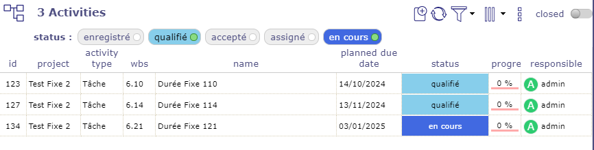
Filtre de statut¶
Seuls les statuts existants sont visibles s’ils sont utilisés.
Sélectionnez l’un d’eux et la liste des éléments sera filtrée.
Il s’agit d’un filtre rapide par statut.
Gestion des tags¶
Pour les éléments de type projet, activité et ticket, vous pouvez utiliser un système de tags.
Cela permet de saisir des mots-clés qui vous permettront de restreindre l’affichage de vos listes en cliquant sur les tags souhaités.
Ouvrez les filtres pour permettre l’affichage des tags directement sur la barre de titre de l’élément.

Gestion des tags¶
Cliquez sur le champ pour afficher les tags existants.
Astuce
Vous pouvez également utiliser les flèches haut et bas pour afficher et naviguer dans la liste déroulante des tags déjà existants.
Vous pouvez restreindre la création et l’utilisation des tags par projet dans les paramètres globaux.
Enregistrement des modifications¶
Si vous ne sauvegardez pas les modifications, un message vous demande de confirmer la sauvegarde, d’annuler les modifications ou de continuer les modifications sur cet élément.
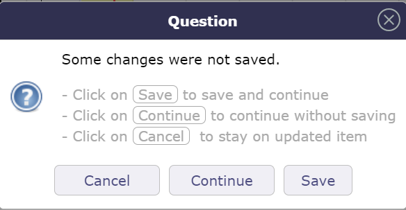
Sauvegarder, annuler ou continuer sur vos données¶
La touche « Entrée » permet de sauvegarder les modifications
La touche « Échap » annulera le message et vous continuerez à éditer l’élément courant
Section Affectations¶
Cette section permet de gérer l’affectation des ressources aux projets.

Section Affectation¶
Cliquez sur
 pour créer une nouvelle affectation.
pour créer une nouvelle affectation.Cliquez sur
 pour affecter une équipe
pour affecter une équipeCliquez sur
 pour affecter une organisation
pour affecter une organisationCliquez sur
 pour modifier une affectation existante.
pour modifier une affectation existante.Cliquez sur
 pour supprimer l’affectation correspondante.
pour supprimer l’affectation correspondante.Cliquez sur
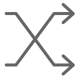
pour remplacer la ressource sur l’affectation correspondante.
{kind=link}
Lors de l’ajout d’une assignation, vous pouvez sélectionner plusieurs ressources à la fois.
Les noms des personnes assignées apparaissent sous le champ ressource, mais ils ne sont affichés dans la section qu’une fois votre sélection confirmée.
Si plusieurs ressources sont sélectionnées sans choisir de profil, le profil par défaut leur est assigné.
Si un profil est sélectionné, il est assigné à toutes les ressources sélectionnées.
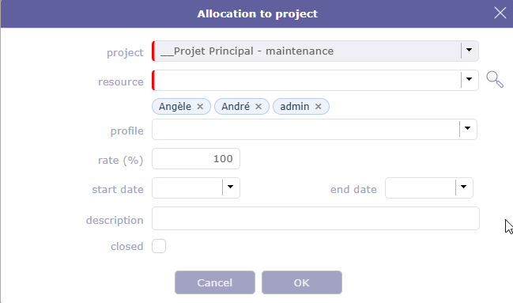
Fenêtres d’affectation¶
Une alerte est générée lors de la suppression de sa propre affectation.
Les sections contact et utilisateurs n’affichent que ceux qui ont uniquement ce rôle.
Une icône spéciale est placée sur les lignes de ressources représentant un pool de ressources.
Cliquez sur le nom de la ressource pour accéder directement à la ressource sélectionnée.
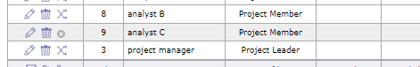
Affectation close¶
Les affectations closes sont indiquées par un fond gris.
Taux d’affectation¶
Le taux d’affectation sur la ressource calcule le pourcentage d’affectation à prendre en compte pour la planification selon le calendrier de la ressource.
Par exemple, si la ressource dispose d’un calendrier France standard, alors la ressource travaille 5 jours par semaine.
Son taux d’assignation sur le projet est de 100 %, la ressource peut être planifiée sans plafond et peut potentiellement travailler sur ce projet jusqu’à 5 jours par semaine.
Son taux d’assignation sur le projet est de 50 %, la ressource peut donc être planifiée pour un maximum de 2,5 jours par semaine sur ce projet.
Son taux d’assignation sur le projet est de 20 %, la ressource peut donc être planifiée pour un maximum d’1 jour par semaine sur le projet
Remplacer la ressource¶
Remplacer une ressource sur une affectation : toutes les tâches assignées seront transférées à la nouvelle ressource avec le travail assigné et le travail restant.
Le travail effectué sur les tâches appartient toujours à l’ancienne ressource.

Fenêtre de dialogue de remplacement d’affectation¶
Section Assignation¶
Cette section permet de gérer l’assignation des ressources aux tâches.
L’assignation d’une ressource à une tâche permet de définir sa fonction sur celle-ci et son coût journalier (si défini lors de la création de la ressource) selon la charge de travail que vous lui assignez.

Section Assignation¶
Le responsable est ajouté automatiquement dans les assignations si aucune ressource n’est assignée.
Si du travail réel existe pour une mission, il ne peut pas être supprimé par défaut. Il est possible de le supprimer en accordant un accès spécifique à la suppression.
Une icône  est placée sur les lignes de ressources représentant un pool de ressources.
est placée sur les lignes de ressources représentant un pool de ressources.
Une ressource peut être assignée dans le tableau sans avoir de charge de travail.
Lorsqu’une ressource reporte une tâche faute de disponibilité suffisante et que sa date d’assignation planifiée est postérieure à la date engagée, le champ de travail assigné restant s’affiche en rouge pour cette ressource.
Vous pouvez trier la liste des ressources par ordre alphabétique.
Gestion des assignations¶
Cliquez sur pour supprimer les assignations sans travail assigné
Cliquez sur
pour supprimer toutes les assignationsCliquez sur
pour assigner une nouvelle ressource.Cliquez sur
pour assigner une équipe entière à l’activitéCliquez sur
pour assigner une organisation entière à l’activitéCliquez sur
pour assigner un pool de ressources à l’activitéCliquez sur
pour modifier l’assignation.Cliquez sur
pour supprimer l’assignation.Cliquez sur
 pour diviser l’assignation (en deux parties égales entre deux ressources)
pour diviser l’assignation (en deux parties égales entre deux ressources)Cliquez sur
 pour accéder directement à la fiche d’affectation de cette ressource. Ce bouton peut apparaître en haut de la zone d’assignation si vous êtes vous-même assigné à l’élément.
pour accéder directement à la fiche d’affectation de cette ressource. Ce bouton peut apparaître en haut de la zone d’assignation si vous êtes vous-même assigné à l’élément.Cliquez sur le nom de la ressource pour accéder aux détails sur l’écran de la ressource.
{kind=link}
Assignation automatique¶
Lorsque vous activez le bouton basculer l’assignation automatique de l’équipe projet, les affectations du projet sont automatiquement ajoutées au tableau des assignations.
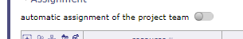
Basculer l’assignation automatique de l’équipe projet¶
Si une nouvelle affectation est effectuée ultérieurement, la liste des assignations est mise à jour automatiquement.
Important
S’il n’y a pas d’assignations au premier niveau du projet, l’assignation automatique ne récupérera pas les assignations du projet parent. Vous devrez cliquer sur + pour assigner des ressources depuis les projets parents.
Assignation close¶
Les assignations closes sont affichées sur fond gris.
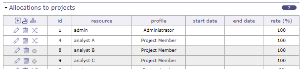
Assignation close¶
Lorsque vous fermez une ressource utilisée sur au moins un projet, un message apparaît demandant confirmation et si vous souhaitez remplacer les assignations pour ce projet.
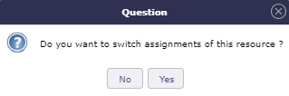
Message de fermeture¶
Si oui, une fenêtre contextuelle apparaîtra afin que vous puissiez déterminer la date à partir de laquelle la ressource sera remplacée et par quelle autre ressource.
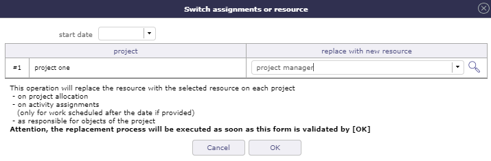
Basculer l’assignation ou la ressource¶
Écran des assignations¶
Un écran dédié aux assignations est disponible pour afficher toutes les assignations combinées.

Écran des assignations¶
Nouvelle assignation¶
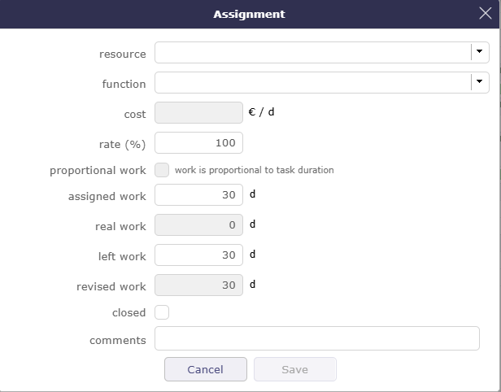
Boîte de dialogue d’assignation¶
Taux d’assignation¶
Le taux d’assignation sur la ressource calcule le pourcentage d’assignation à prendre en compte pour la planification selon l’ETP de la ressource.
Par exemple, si la ressource a un ETP de 1, alors la ressource travaille toute la journée.
Son taux d’assignation sur l’activité est de 100 %, la ressource peut être planifiée sans plafond et peut potentiellement travailler à temps plein sur ce projet.
Son taux d’assignation sur l’activité est de 50 %, la ressource peut donc être planifiée pour un maximum de 0,5 par jour.
Son taux d’assignation sur l’activité est de 20 %, la ressource peut donc être planifiée à 0,2 par jour au maximum.
Taux d’assignation avec travail proportionnel¶
Cette option vous permet de définir le calcul de la charge de travail proportionnellement à la durée de la tâche.
Le taux est alors utilisé non pas pour limiter la distribution de la charge de travail pour la ressource, mais pour la calculer.
Cette option est disponible dans les assignations pour les modes de planification qui utilisent la durée comme levier principal de distribution de la charge de travail.
Mode durée fixe
Mode piloté par la durée
Mode durée contrainte
Modes réguliers
Voir aussi
Assignation multiple à une tâche¶
Une ressource peut être assignée plusieurs fois à une même tâche.
Permet d’assigner la ressource à la même tâche avec une fonction différente (coût journalier différent).
Permet d’ajouter du travail supplémentaire sans modifier l’assignation initiale.
Assignation automatique à une tâche¶
Vous pouvez assigner automatiquement toute l’équipe projet (toutes les ressources affectées au projet) à une activité donnée.
Cette assignation est dynamique : lorsque vous ajoutez une ressource au projet, elle est automatiquement ajoutée à l’activité.
Activez le bouton pour assigner automatiquement les ressources du projet à l’activité.
L’ensemble de l’équipe projet sera ajouté au tableau des assignations.
Seules les ressources assignées directement au projet de l’activité sont prises en compte, et non celles du projet parent,
L’affectation ne doit pas être close
La fonction d’assignation est la fonction par défaut de la ressource
La charge nominale est nulle
Le taux d’assignation est de 100 %
Important
Seules les ressources affectées au projet sont assignées, et non les utilisateurs ou contacts qui ne sont pas également des ressources.
Si vous retirez une ressource de l’assignation, cette ressource n’est pas retirée du projet.
L’assignation automatique ne génère pas de doublons. Si une ressource existe déjà dans les assignations, son assignation n’est pas dupliquée.
En revanche, si l’assignation est close, elle sera rouverte (si l’activité n’est pas elle-même close).
Si l’affectation de la ressource sur le projet est supprimée ou close, l’assignation sur l’activité est automatiquement close afin que les ressources ne puissent plus être attribuées à l’activité, même si la ressource a du travail restant.
Note
Lorsque cette option est décochée, les assignations ne seront pas supprimées (il est impossible de savoir si l’assignation a été générée dynamiquement ou manuellement). Seule l’automatisation pour les ressources nouvellement assignées sera désactivée.
Assignation en mode récurrent¶
Le mode de planification récurrent est le seul mode qui, par défaut, couvre toute la durée du projet.
Si le projet est prolongé, la tâche en mode récurrent se prolongera en conséquence.

Assignation récurrente¶
Lors de l’assignation, vous distribuez la charge de travail de votre ressource sur une base hebdomadaire.
Vous pouvez saisir une valeur différente pour chaque jour de la semaine.
Le raccourci copier est un accélérateur pour copier la valeur saisie le lundi sur tous les autres jours.
La charge totale sera calculée après validation en fonction de la durée de votre projet et des temps assignés.
Avertissement
Il s’agit d’une méthode de planification prioritaire.
L’utilisation de ce mode peut générer une charge de travail importante !.
Assignation des Interventions Planifiées¶
La charge de travail assignée n’est plus prédéterminée mais sera saisie sur un calendrier cliquable, par demi-journée.
Voir aussi
Calendrier de planification manuelle¶
Cliquez sur
pour ajouter une nouvelle assignation.Pour voir le tableau de distribution de la charge de travail, sélectionnez la ressource et confirmez. Cliquez ensuite sur le bouton de modification.
Si l’assignation existe déjà, cliquez directement sur
.Le calendrier sera alors affiché dans la fenêtre d’assignation..
L’affichage commence au mois en cours et s’étend sur les six mois suivants.
Chaque case est divisée en deux demi-journées. Le travail assigné est alors automatiquement la somme des demi-journées sélectionnées.

Assignation avec le mode de planification manuelle¶
La charge de travail enregistrée dans cette fenêtre sera affichée sur l’écran des interventions planifiées.
Distribution de la charge de travail pour une nouvelle assignation¶
Cliquez sur une case pour saisir une charge de travail.
Selon le paramètre global, cette charge de travail sera soit du travail planifié soit du travail réel.
Chaque jour est représenté par deux demi-journées (matin et après-midi)
Vous pouvez planifier sur les 6 mois suivant la date de l’assignation
Les demi-journées renseignées seront visibles sur l’écran des interventions planifiées
Sauvegardez ces données avec le bouton de sauvegarde
Activité en temps réel¶
Lorsque vous cochez l’option activité au temps passé sur une activité, plusieurs champs ne seront plus accessibles et un recalcul de la charge sera effectué :
Recalcul de la charge nominale = charge révisée lors de la modification du reste à faire
Recalcul du reste à faire = charge nominale - charge réelle lors de la modification de la charge assignée. Il s’agit de l’opération existante dans tous les cas
Interdiction de modifier la charge assignée à une valeur inférieure à la charge réelle. Un message bloquant s’affichera alors
Section Traitement¶
Cette section contient des informations sur le traitement des éléments, c’est-à-dire sur leur cycle de vie et leur avancement.
Elle contient généralement des informations de statut, des rapports macro, des situations ou les responsables du travail sur cet élément.
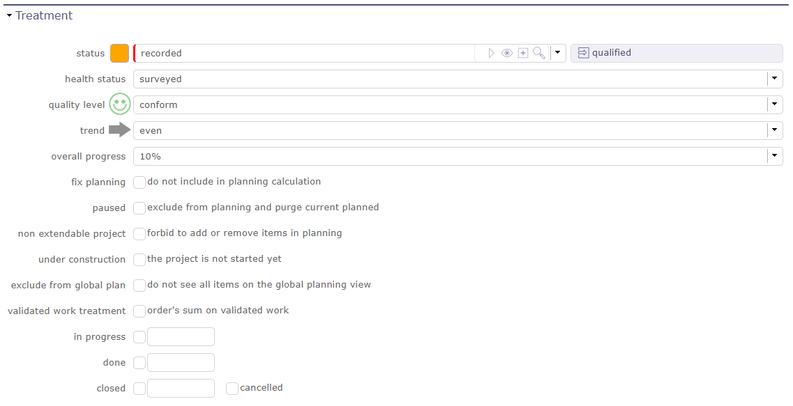
Section Traitement pour le projet¶
Selon l’élément, cette section peut afficher des champs différents.
Toutes les listes de cette section sont personnalisables.
Paramètres de suivi du projet¶
Cette partie de la section vous permet de suivre votre projet de manière plus visuelle.

Paramètres de suivi du projet¶
Sur l’écran Aujourd’hui, vous pouvez voir ces informations dans le périmètre des chiffres comptabilisés dans la Section Projet.

périmètre des chiffres comptabilisés dans la section projet sur l’écran Aujourd’hui¶
État macro¶
Les états macro fonctionnent grâce à des leviers.
Plusieurs états sont renseignés directement en fonction des informations que vous enregistrez.
en cours¶
Le champ est renseigné lorsque vous saisissez la première imputation dans vos imputations.
Veuillez noter que la date enregistrée dans le champ « en cours » est la date à laquelle la charge est imputée et non le jour où elle est saisie.
Terminé¶
Le champ est renseigné lorsque vous saisissez la dernière imputation dans vos imputations.
Le temps restant DOIT donc être à 0 pour que ce champ soit complété.
Clos¶
Le champ est renseigné lorsque vous fermez un élément.
Sur les activités, réunions, sessions de test et sessions de poker closes, l’option « afficher les fermés » pour l’assignation est toujours considérée comme activée.
Annulé¶
Le champ est renseigné lorsque vous annulez l’élément via le statut de votre workflow
Autres options¶
ProjeQtOr vous propose plusieurs options pour construire vos projets, les protéger, ou même les mettre en pause en fonction des aléas que vous pouvez rencontrer.
Planification fixe¶
Le projet n’est jamais recalculé.
Cela signifie que la planification restera toujours la même, quelles que soient les actions effectuées sur d’autres projets.
Important
Cela peut entraîner des incohérences dans les dépendances.
En pause¶
Disponible sur les projets et les activités.
La planification n’est jamais recalculée.
Contrairement à la « planification fixe », la planification actuelle du projet est effacée.
Ceci est utilisé pour reporter le projet à une date indéterminée.
Projet non extensible¶
Vous ne pouvez pas ajouter de nouveaux éléments à ce projet,
Vous ne pouvez pas supprimer d’éléments de ce projet.
Vous ne pouvez pas déplacer des éléments depuis/vers ce projet.
En construction¶
La ressource ne le voit pas dans les imputations.
Les alertes ne sont pas générées
Les e-mails ne sont pas envoyés.
Exclure du plan global¶
Ne pas afficher les éléments non planifiables de ce projet dans la vue de planification globale.
Cela signifie que seuls les éléments de planification « standards » seront affichés. Les actions, décisions, livraisons… seront exclues.
Traitement du travail validé¶
Active le traitement du travail validé sur la base de la somme du travail des commandes du projet.
Sinon, il sera calculé sur la somme du travail validé des activités
Heures de travail¶

Section heures de travail pour le projet¶
Section visible si vous avez activé le paramètre global d’application des heures de travail aux projets.
Vous pouvez saisir des horaires différents pour chaque projet.
Ces horaires seront ensuite utilisés pour les automatismes utilisant les délais.
Section Configuration¶

Section Configuration¶
Vous pouvez consulter les produits et les versions de produits associés à ce projet.
Cliquez sur le nom du produit ou la version du produit pour accéder à leurs écrans respectifs.
Voir aussi
Section Avancement¶
Cette section permet à la fois de définir la planification et de suivre l’avancement.
Tous les éléments de planification disposent d’une section avancement.

Section avancement pour un projet¶
La description des différentes sections est regroupée par éléments de planification qui ont des champs et des comportements communs.
Les données d’avancement sont affichées dans le même format, mais selon l’élément de planification, les champs peuvent avoir une autre signification ou un autre comportement.
Vous trouverez ci-dessous la définition des différentes colonnes qui composent la section Avancement.
Dates et durée¶
La section dates et durées vous permet d’enregistrer et d’afficher différentes informations temporelles sur votre élément.
Cliquez sur le champ pour afficher le calendrier.

Afficher le calendrier¶
Lorsque vous survolez un champ de date renseigné, une croix en haut à droite du champ vous permet d’en effacer le contenu.
Lorsque le champ est vide, rien ne s’affiche.

Effacer la date¶
Validé¶
Définir les paramètres de saisie en fonction du mode de planification sélectionné
Définir les dates d’échéance initiales comme référence afin de contrôler les éventuels écarts dans votre projet.
Définir une date limite à laquelle le travail doit être terminé. Vous pourrez comparer vos dates validées avec les dates planifiées par le logiciel pour suivre les éventuels écarts de vos projets.
Directement sur l’écran projet, sans autre contrainte, détermine le début de la planification pour celui-ci.
Sont héritées des successeurs ou des parents lorsque l’option priorisation des tâches est sélectionnée et indiquée en italique
Voir aussi
Planifié¶
Les dates planifiées peuvent être initialisées avec les dates validées ou les dates demandées (si les dates validées ne sont pas spécifiées). Elles sont déterminées lors du calcul de la planification.
Le calcul de la planification est effectué en fonction des tâches assignées aux ressources et de leurs prédécesseurs.
Ces dates sont calculées en fonction des nombreuses contraintes que vous avez définies (ETP, Taux, Dépendances, Charges, priorités, disponibilités…).
Si les dates saisies dans les dates validées sont antérieures aux dates calculées par le logiciel - les dates planifiées - alors la case de date de fin planifiée est rouge ainsi que la barre du diagramme de Gantt correspondant à l’élément, reflétant ainsi un éventuel retard.
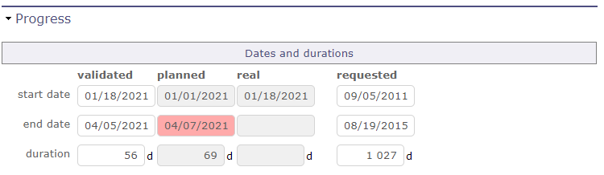
Les dates planifiées sont supérieures aux dates validées¶
Important
Les dates planifiées sont calculées par le logiciel. Vous n’avez pas la possibilité de modifier ces dates manuellement.
Réel¶
Ce sont les dates du travail effectivement réalisé. Le travail effectivement imputé
La date de début réelle est définie lorsque le travail a commencé (En cours).
La date de fin réelle est définie lorsqu’il n’y a plus de travail restant (Terminé).
Note
La date de début réelle sera propagée aux éléments parents jusqu’au projet.
La date de fin réelle de l’élément parent sera initialisée lorsque tous les sous-éléments auront été complétés.
Le travail réel est en cours d’exécution. Il est renseigné via l’écran des imputations.
Les éléments contenant du travail réel ne peuvent pas être supprimés.
Pour activer cette fonctionnalité, vous devez d’abord supprimer le travail réel ou configurer la suppression forcée dans l”accès spécifique.
Demandé¶
Permet de définir des dates prévisionnelles. Ce sont généralement les dates convenues avec votre client ou le bénéficiaire de votre activité..
Sauf si elles sont les seules indiquées, ces dates n’ont aucun impact sur la planification.
Si aucune date validée n’est spécifiée et qu’aucune contrainte n’est appliquée, elles peuvent initialiser les dates planifiées.
Durée¶
Les durées correspondent au nombre de jours entre les dates de début et de fin.
Ce sont toujours des valeurs entières, sans décimales !
Elles sont calculées automatiquement.
Mais vous pouvez également saisir une date de début et un nombre de jours entiers, la date de fin sera alors calculée automatiquement.
Coûts et charge de travail¶
Le coût des ressources est calculé grâce à la charge de travail allouée à chaque ressource sur les tâches.
Vous devez renseigner une fonction associée à un coût journalier pour vos ressources.
Voir aussi
Fonction et coût sur l’écran des ressources
Validé¶
Permet de définir le travail planifié et le coût budgété des ressources.
Cette valeur de travail est utilisée pour le calcul de l’avancement prévu et de la marge du projet (travail).
La valeur de coût est utilisée pour le calcul de la marge du projet (coût).
Note
Projet
Les valeurs de travail et de coût peuvent être initialisées avec la somme du travail total et du montant de toutes les commandes du projet.
Voir aussi
Assigné¶
Somme du travail planifié assigné aux ressources et du coût estimé.
Réel¶
Somme du travail effectué par les ressources et du coût engagé.
Restant¶
Somme du travail restant estimé pour terminer les tâches et les coûts en découlant.
Le travail restant doit être réévalué par la ressource lors de la saisie du travail réel sur l’écran d’imputation du travail réel.
Le travail restant peut également être modifié au niveau de l’assignation, au niveau de la gestion de projet.
Réestimé¶
Somme du travail total des ressources qui sera nécessaire du début à la fin et des coûts en découlant.
[Reassessed] = [Real] + [Left]
Travail sur les tickets¶
La somme du travail effectué sur les tickets et les coûts est incluse dans le travail de l’activité liée via le champ « activité de planification » des tickets.
La somme du travail effectué sur les tickets non liés à une activité sera intégrée dans le travail du projet.
Suivi des dépenses¶
Cette section est utilisée par le Projet.
Voir aussi
Validé (Dépense)¶
Permet de définir le coût budgété des dépenses du projet.
Cette valeur est utilisée pour le calcul de la marge du projet (coût).
Assigné (Dépense)¶
Dépenses du projet planifiées.
Somme du « montant planifié » pour toutes les dépenses du projet.
Réel (Dépense)¶
Dépenses du projet engagées.
Somme du « montant réel » pour toutes les dépenses du projet.
Restant (Dépense)¶
Dépenses du projet non encore engagées.
Somme du « montant planifié » pour les dépenses dont le « montant réel » n’est pas encore défini.
Réestimé (Dépense)¶
Projections de dépenses.
Somme du Réel + Restant
Restant (Réserve)¶
Réserve de projet.
Note
Le total est la somme des coûts des ressources, des dépenses et de la réserve de leur colonne correspondante.
Avancement technique¶
La section Avancement technique vous permet d’afficher un avancement en unités de travail.
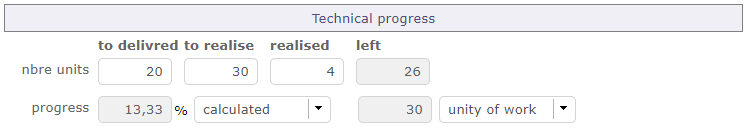
Section avancement technique¶
Avertissement
Pour afficher la section de progression technique, qui correspond à un avancement en unités de travail, vous devez positionner l’option dans les paramètres globaux.
Voir aussi
La section avancement technique est affichée sur les écrans Projet et Activité.
Vous déterminez le nombre d’unités de travail à réaliser sur l’activité.
L’avancement et le reste seront consolidés vers le projet parent et/ou l’activité parente.
Vous pouvez afficher l’avancement de la réalisation de vos unités de travail directement sur les barres du Gantt de la même manière que le travail réel.
Nombre d’unités¶
Comme pour les dates et les durées, vous pouvez saisir plusieurs valeurs pour la réalisation de vos unités de travail.
À livrer
Nombre d’unités à livrer.
À réaliser
Nombre d’unités à produire.
Réalisé
Nombre d’unités effectivement produites.
Avancement
Pour l’avancement en unité de travail, vous pouvez choisir la méthode d’évaluation.
Calculé
L’avancement en pourcentage est calculé par le logiciel.
Manuel
Vous définissez vous-même l’avancement de la réalisation de vos unités de travail.
Poids
Le poids définit une certaine importance dans la réalisation de ces unités.
Il détermine comment le calcul de l’avancement des unités de travail sera calculé et consolidé.
Si des éléments ont un poids = 0, au lieu de ne pas calculer l’avancement technique consolidé, le calcul est effectué avec un poids = 1 pour tous les éléments.
Manuel
Vous saisissez une valeur manuellement selon l’unité de travail à réaliser.
Unité de travail
C’est le nombre d’unités à livrer ou à réaliser.
Pilotage¶
Avancement¶
Pourcentage d’avancement réel.
Calculé par la somme du travail effectué divisée par la somme du travail réestimé.
[Progress %] = [real work] / [reassessed work]
= [real work] / ( [real work] + [left work] )
Prévu¶
Pourcentage d’avancement prévu.
Calculé par la somme du travail effectué divisée par le travail planifié.
[Expected %] = [real work] / [validated work]
Priorité¶
Permet de définir une priorité à un projet ou une activité.
Par défaut, la valeur est définie à « 500 » (priorité moyenne).
1 étant la priorité la plus haute et 999 la priorité la plus basse.
Section Pilotage Activité¶
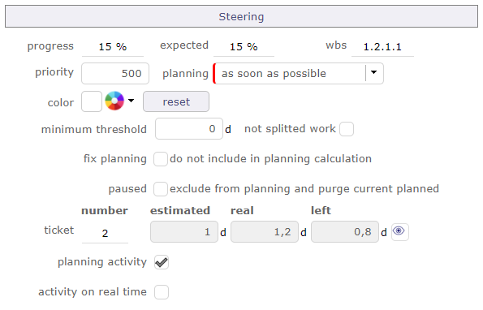
Section Pilotage sur l’écran Activité¶
Avancement¶
Vous pouvez suivre l’efficacité de l’avancement de votre projet en fonction des données saisies en amont sur les dates validées.
Mode de planification¶
Utilisé par l’Activité et la Session de test.
Selon le mode de planification sélectionné, le calcul de votre planification ne sera pas exécuté de la même façon.
Voir aussi
Seuil minimum et travail indivisible¶
Lorsque cette valeur est définie, l’activité ne sera planifiée que le jour où la disponibilité journalière sera supérieure ou égale à ce seuil.
Vous avez également la possibilité d’ajouter une nouvelle propriété à une tâche de type « travail non fractionné ».
Cela nécessitera de définir le travail minimum à allouer chaque jour et donc de renseigner le champ seuil minimum.
La planification nécessitera de trouver des jours consécutifs avec au moins la valeur donnée possible.
Voir aussi
Planification fixe¶
La planification fixe permettra d’éviter le recalcul de la planification pour une activité.
Voir aussi
En pause¶
Lorsqu’une activité est mise en pause, elle n’est jamais recalculée.
Contrairement à fixer la planification, la planification actuelle du projet est purgée.
Cela revient à reporter l’activité à une date indéterminée.
Lorsque cette option est cochée, l’option fixer la planification est automatiquement cochée.
Activité en temps réel¶
Lorsque vous cochez l’option possibilité de gérer les activités en temps réel dans les paramètres globaux, la charge validée devient en lecture seule et le calcul de la charge validée est égal à la charge révisée.
L’option peut être désactivée manuellement même si elle a été définie pour le type d’activité.
L’option est incompatible avec les activités gérées par « Unités de travail » (module chiffre d’affaires).
Le champ ne sera alors pas visible et les champs « Unité de travail », « complexité » et « quantité » seront masqués si l’option « activité au fil du temps » est activée.
Il sera donc nécessaire de désactiver l’option pour faire réapparaître ces champs.
Activité de planification¶
Le champ activité de planification permet de lier le ticket à une activité de planification
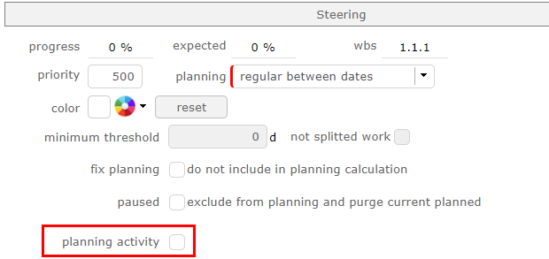
Activité de planification¶
Une option est disponible pour identifier toutes les activités comme des activités de planification.
Si l’option est activée, la case à cocher disparaît de l’interface d’activité et toutes les activités peuvent être sélectionnées depuis la liste déroulante du ticket.
Ticket¶

Tickets attachés¶
Permet le suivi des tickets attachés à l’activité via le champ « activité de planification » des tickets.
Le champ Estimé sera mis en évidence lorsque la somme du travail estimé sur les tickets est supérieure au travail planifié sur l’activité.
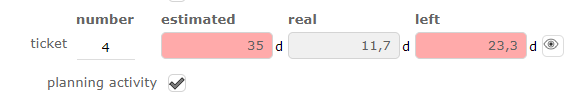
Temps estimé supérieur au temps à réserver pour l’activité¶
Le champ Restant sera mis en évidence lorsque la somme du travail restant sur les tickets est supérieure au travail planifié restant sur l’activité.
Afficher les tickets attachés¶
Cliquez sur
 pour afficher la liste des tickets attachés à l’activité.
pour afficher la liste des tickets attachés à l’activité.Cliquez sur le nom d’un ticket pour y accéder directement.

Liste des tickets¶
Section Pilotage Projet¶

Section Pilotage sur l’écran Projet¶
Marge
La marge est uniquement affichée dans la section pilotage de l’écran projet.
Utilisé par le Projet.
Calculée par le travail planifié moins la somme du travail réestimé.
[Margin] = [Validated work] - [Reassessed work]
[Margin(%)] = ([Validated work] - [Reassessed work]) / [Validated work]
Marge (coût)
Calculée par le coût budgété (ressource et dépense) moins le total du coût réestimé.
[Margin] = [Validated cost] - [Reassessed cost]
[Margin(%)] = ([Validated cost] - [Reassessed cost]) / [Validated cost]
Section Avancement Jalon¶

Section Pilotage sur l’écran Jalon¶
Cette section permet de définir la planification et de suivre l’avancement d’un jalon.
Les dates demandées permettent de définir la date d’échéance initiale du jalon. Elles n’ont aucun impact sur la planification.
Les dates validées permettent de définir la date d’échéance à laquelle le jalon doit être atteint.
Les dates réelles sont déterminées lorsque le statut du jalon est « terminé ».
Jalon fixe¶
La date d’échéance planifiée correspond à la valeur du champ date d’échéance validée.
Le jalon ne se déplacera pas et peut avoir des successeurs.
Jalon flottant¶
Le calcul de la date d’échéance planifiée prend en compte les dépendances avec les tâches.
Le jalon se déplacera en fonction des prédécesseurs.
Note
Un jalon n’a pas de durée, il n’y a donc pas de dates de début et de fin pour un jalon, juste une seule date.
Section Avancement Réunion¶

Section Pilotage sur l’écran Réunion¶
Cette section permet de définir la priorité et de suivre l’avancement d’une réunion.
Validé
Permet de définir le travail planifié et le coût budgété.
Utilisé pour consolider le travail validé et le coût vers le projet.
Assigné
Somme du travail planifié assigné aux participants et du coût planifié.
Réel
Somme du travail effectué par les participants et du coût.
Restant
Somme du travail planifié restant et du montant restant.
Couleur
Vous pouvez définir une couleur sur une réunion.
Cette couleur sera affichée sur les barres du diagramme de Gantt.
Sous-Projet et Sous-Activité¶
Sur l’écran des projets, cette section vous permet d’afficher les sous-projets et leur statut liés au projet sélectionné.
Cliquez sur le nom du sous-projet pour accéder à son écran dédié.
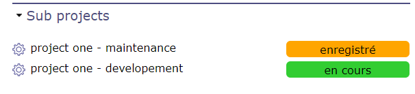
Affichage des sous-projets¶
De la même manière, vous pouvez afficher sur l’écran des activités les sous-activités liées à l’activité sélectionnée.
Cliquez sur le nom de la sous-activité pour accéder à son écran dédié.

Affichage des sous-activités¶
Liste de tâches¶
Vous pouvez créer des sous-tâches ou des étapes pour les éléments sélectionnés.
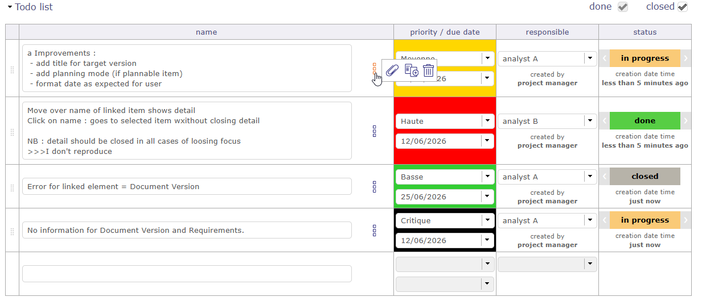
Liste de tâches¶
Pour chaque ligne complétée, une nouvelle ligne apparaît après. Vous pouvez enregistrer jusqu’à 4000 caractères
Vous pouvez spécifier l’urgence, la date d’échéance, le responsable et l’état du point à traiter.
Sous le manager sélectionné, le nom habituel de l’utilisateur qui a créé la ligne est affiché. Sous le statut, la date de création de la ligne est affichée.
Vous pouvez sélectionner plusieurs statuts pour vos points à traiter, allant de « en cours » à « clos ».
=> « en cours » => « terminé » => « clos »
<= « en attente » <= « en cours » <= « terminé » <= « clos »
« en attente » => « en cours »
Vous pouvez fermer un point à traiter. Il disparaît des listes. Affichez-le à nouveau en utilisant le bouton bascule « clos ».
Vous pouvez réorganiser la liste en utilisant les poignées
 devant le nom du point à traiter.
devant le nom du point à traiter.
Pour supprimer une ligne, effacez complètement le texte et validez après la fenêtre de confirmation de suppression.
Si l’élément a un responsable défini, celui-ci est automatiquement renseigné comme responsable pour chaque ligne créée
Si le comportement du type d’élément a été défini avec le paramètre « liste de tâches obligatoire au statut terminé », alors le changement de statut vers terminé est impossible si les éléments des listes de tâches ne sont pas tous définis sur « terminé ».
La liste de tâches est un élément qui peut être copié dans les options de copie d’une activité.
Un écran dédié aux points à traiter est disponible dans le menu Pilotage.

Écran liste de tâches¶
Vous avez alors accès à toutes vos listes, tous éléments confondus.
Des filtres sont disponibles pour restreindre l’affichage de celles-ci, y compris l’affichage direct de la version sous forme de liste déroulante, avec la possibilité de modifier la valeur de l’élément
Important
Les listes de tâches ne sont pas affichées dans les mises en page d’écran popup.
Par exemple, les listes de tâches ne seront pas affichées lors de la modification d’une tuile Kanban.
Prédécesseur et Successeur¶
Cette section permet de gérer les liens de dépendance entre les éléments.
Une dépendance peut être créée depuis l’élément prédécesseur et/ou successeur.
Le lien de dépendance peut être créé dans le diagramme de Gantt.
Seules les dépendances vers des éléments planifiables sont affichées dans la vue de planification.
Les dépendances vers des éléments non planifiables sont visibles graphiquement sur la planification globale.
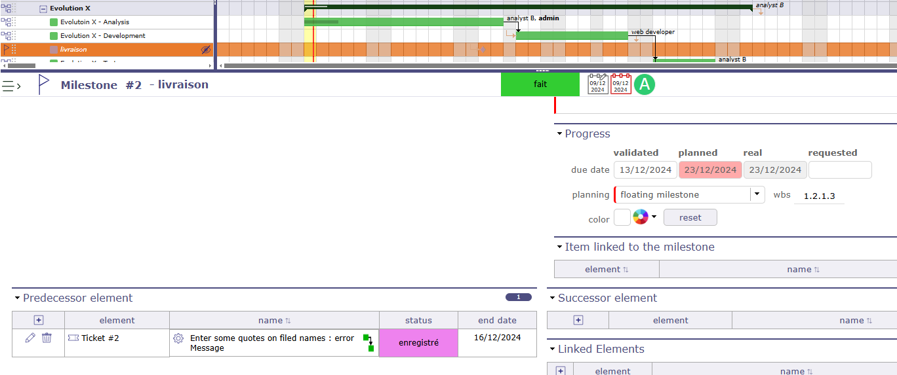
Le ticket prédécesseur du jalon n’est pas visible dans le diagramme de Gantt. Le ticket est visible dans le tableau Successeur/Prédécesseur. La date du ticket impacte la date du jalon¶
Les éléments non planifiables liés par des dépendances restent visibles dans les tableaux de prédécesseurs et de successeurs.
Ces éléments non planifiables peuvent avoir un impact sur les éléments planifiables de votre projet.
Cliquez sur le nom d’un prédécesseur ou d’un successeur pour accéder directement à l’élément.

Section Prédécesseur et Successeur¶
Cliquez sur
pour ajouter un lien de dépendance.Cliquez sur
pour modifier le lien de dépendance.Cliquez sur
pour supprimer le lien de dépendance.
Dans le champ NOM, des icônes sont affichées pour indiquer le type de dépendances
 Dépendance Fin Fin
Dépendance Fin Fin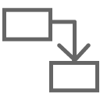
Dépendance Fin Début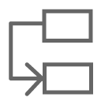
Dépendance Début Début
{kind=link}
{kind=link}
Survolez les liens présents pour que la fenêtre contextuelle d’information s’affiche
Informations en fenêtre contextuelle de la section Prédécesseur et Successeur¶
Des informations supplémentaires concernant le type de lien sont affichées
Pour modifier une dépendance, cliquez sur la flèche qui devient orange, une fenêtre contextuelle s’affiche vous permettant de modifier le type et d’ajouter un éventuel délai.
Le délai peut être positif ou négatif. Un délai négatif permet le chevauchement de certaines tâches
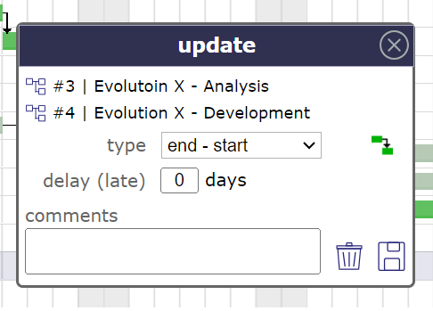
Boîte de dialogue des dépendances¶
Mode strict pour les dépendances¶
Le mode de dépendance strict force l’élément de planification successeur à ne pas démarrer le même jour que son prédécesseur mais le jour suivant, même si la tâche est terminée avant la fin de la journée.
Pour que le successeur démarre le même jour ou avant la fin de la tâche prédécesseur, sélectionnez NON pour le mode strict ou vous pouvez également définir un délai négatif.
Le mode de dépendance strict est un paramètre global.
Par défaut, le mode de dépendance strict est défini sur OUI.
Dépendances et délais¶

mise en évidence de la date¶
Mise en évidence de la date qui contraindra le plus l’activité suivante.
Éléments de projets différents¶
Il est possible de lier des éléments de projets différents.

Dépendance entre deux éléments de deux projets différents¶
Lorsque vous créez une dépendance entre deux éléments de deux projets différents, le tableau affiche l’icône du projet à côté du nom de la dépendance
et lorsque vous survolez l’icône, l’infobulle vous donne le nom du projet dont dépend l’élément.
Uniquement prédécesseur/successeur d’un élément¶
Dans la vue Gantt, vous pouvez afficher uniquement les prédécesseurs ou tous les successeurs d’un élément particulier.

Afficher tous les successeurs/prédécesseurs d’un élément¶
Note
Les boucles récursives sont contrôlées lors de la sauvegarde.
Section Éléments liés¶
Cette section permet de gérer les liens entre les éléments ProjeQtOr.
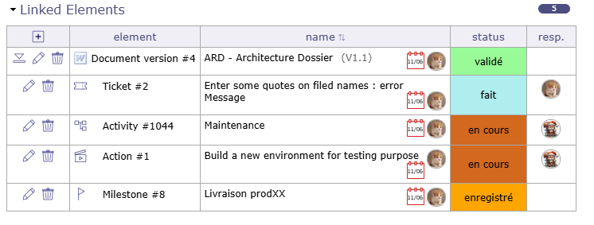
Section élément lié¶
Vous associez des éléments à différents éléments dans le même projet.
Un projet peut être lié à d’autres.
Cliquez sur le nom d’un élément pour y accéder directement.
Cliquez sur
pour créer un nouveau lien.Cliquez sur
pour supprimer le lien correspondant.Cliquez sur
 pour télécharger le document
pour télécharger le documentCliquez sur
pour modifier le commentaire lié à l’élément
Informations sur le lien¶
Survolez les liens présents pour que la fenêtre contextuelle d’information s’affiche.
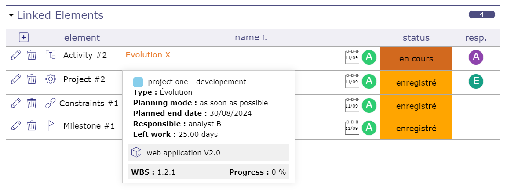
Fenêtre contextuelle sur la section Éléments liés¶
Des informations supplémentaires concernant le type de lien sont affichées.
Relation / Synchronisation¶
Si l’élément A est lié à l’élément B, l’élément B est automatiquement lié à l’élément A.
Un lien par défaut entre des éléments n’a aucun impact sur leur traitement. Mais vous pouvez synchroniser les deux éléments.
Ainsi, lorsqu’une modification, telle qu’un changement de statut, survient sur l’un des deux éléments, l’autre effectue la même modification.
Cliquez sur le bouton Synchroniser l’élément lié.
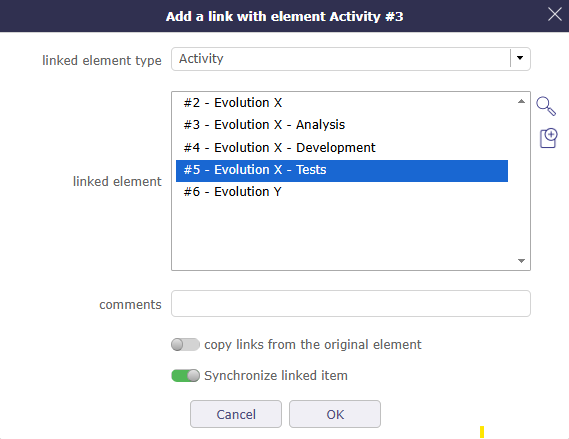
Synchroniser les éléments¶
Lorsque l’élément est synchronisé, l’icône 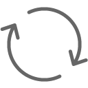
{kind=link}
La synchronisation modifiera de manière synchrone le statut, le responsable, le projet, le nom, le produit, la version du produit, le composant, la version du composant
Important
Une seule synchronisation est possible sur un élément donné.
Liste de valeurs des éléments liés
Par défaut, la liste de valeurs affiche les éléments du même projet.
Mais il est possible de lier des éléments de projets différents.
Cliquez sur  pour obtenir la liste des éléments de tous les projets.
pour obtenir la liste des éléments de tous les projets.
Lien avec un Document
Lorsqu’un lien vers un document est sélectionné, la version du document peut être sélectionnée.

La version du document est disponible¶
Les documents liés sont disponibles directement dans la liste des éléments liés.
Version spécifiée
Un lien avec un élément document offre la possibilité de sélectionner une version spécifique.
Un lien direct vers la version du document est créé.
Version non spécifiée
Si la version n’est pas spécifiée, la dernière version sera sélectionnée.
Le téléchargement transférera toujours la dernière version du document.
Section Pièces jointes¶
Cette section vous permet de joindre des fichiers ou des hyperliens à l’élément sélectionné.

Section pièce jointe¶
Vous pouvez joindre tous types de fichiers
Il existe plusieurs façons d’ajouter un fichier.
Cliquez sur
pour ajouter un fichier joint à un élément.Cliquez sur
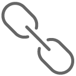
pour ajouter un hyperlien à un élément.
{kind=link}
Dans la zone des fichiers joints dans la barre d’outils de la zone de détail
Directement sur la zone de détail de l’élément par glisser-déposer
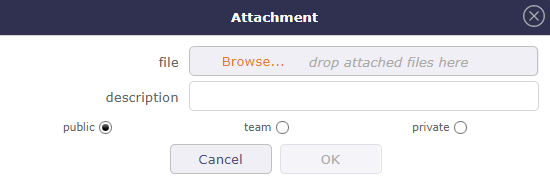
Fenêtre d’ajout d’un fichier joint¶
Renseignez la description pour donner un nom au document qui sera joint.
Survolez l’icône  pour voir le nom exact du document. Autrement, le nom exact du document sera affiché.
pour voir le nom exact du document. Autrement, le nom exact du document sera affiché.
Cliquez sur
pour supprimer une pièce jointe.Cliquez sur
pour télécharger le fichier joint.Cliquez sur
pour modifier le commentaire attaché à l’élément
Vous pouvez sélectionner un ou plusieurs fichiers de types différents avec les raccourcis CTRL lorsque les fichiers ne sont pas consécutifs ou SHIFT pour ceux qui se suivent.
Les pièces jointes sont stockées côté serveur. Le répertoire des pièces jointes est défini dans les Paramètres globaux.
Section Notes¶
Cette section permet d’ajouter des notes sur les éléments.
Les notes sont des commentaires qui peuvent être partagés pour suivre certaines informations ou l’avancement.
L’ordre d’affichage des notes, qu’elles soient en mode discussion ou non, commence par la plus récente en haut. En mode discussion, le dernier élément affiche la date de la dernière réponse.
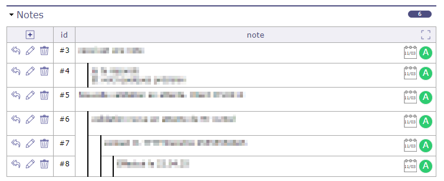
Notes¶
Cliquez sur
 pour passer les notes en mode plein écran.
pour passer les notes en mode plein écran.Cliquez sur
 pour revenir aux notes en fenêtre contextuelle standard.
pour revenir aux notes en fenêtre contextuelle standard.Cliquez sur
pour ajouter une note à un élément.Cliquez sur
 pour répondre à la note précédente.
pour répondre à la note précédente.Cliquez sur
pour modifier la note.Cliquez sur
pour supprimer la note.
Vous pouvez ajouter une note sur un élément clos ou en lecture seule.
Voir aussi
Gestion des notes¶
Lorsque vous rédigez une note sur un élément, vous pouvez la réduire pour la mettre en attente afin de récupérer des informations sur d’autres éléments par exemple, et rouvrir la note sans avoir perdu son contenu.
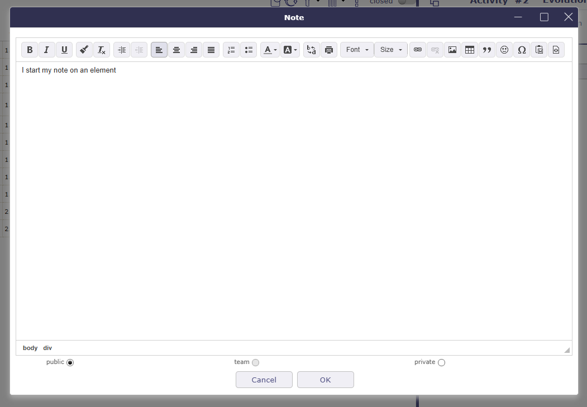
Ajouter une note¶
La note est réduite en bas à droite de la page.
Vous pouvez naviguer vers d’autres écrans, la note est superposée.
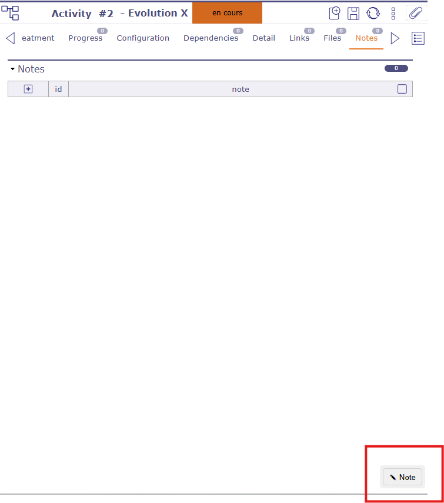
note en attente¶
Note obligatoire au changement de statut¶
Une note peut être obligatoire lors du changement de statut d’un élément.
Les statuts nécessitant une note peuvent être définis sur le type d’élément.
Lors du passage à l’un de ces statuts, une fenêtre contextuelle s’ouvre pour saisir la note obligatoire.
Une nouvelle note n’est pas obligatoire si une note a déjà été ajoutée à l’élément moins de 5 minutes avant le changement de statut.
Note prédéfinie¶
La liste de valeurs apparaît lorsqu’une note prédéfinie existe pour un élément ou un type d’élément.
La sélection d’une note prédéfinie remplira automatiquement le champ de texte de la note.
Les notes prédéfinies sont définies dans Notes prédéfinies.
Visibilité des notes¶
Public : Visible par tous les membres affectés au projet.
Équipe : Visible par tous les membres de l’équipe du créateur.
Privé : Visible uniquement par le créateur.
Le nom du créateur est affiché même s’il ne s’agit pas d’un utilisateur.
L’historique¶
La plupart des manipulations et des modifications sont enregistrées dans l’historique, telles que les dates validées et assignées, les informations sur les affectations aux projets, les assignations aux activités, les durées, mais aussi toutes les informations de personnalisation.
L’historique ne tracera pas la création et la configuration des indicateurs, les audits de connexion ou la saisie du travail (feuille d’imputation).
En revanche, si la saisie du travail entraîne des modifications sur des éléments tels que les dates ou les durées, ces informations sont enregistrées dans l’historique.
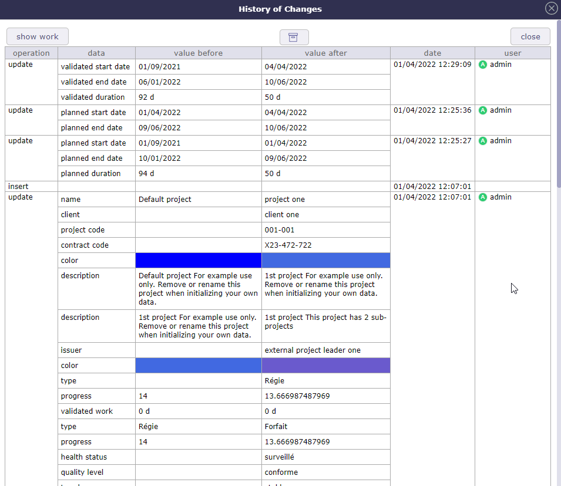
Historique du projet¶